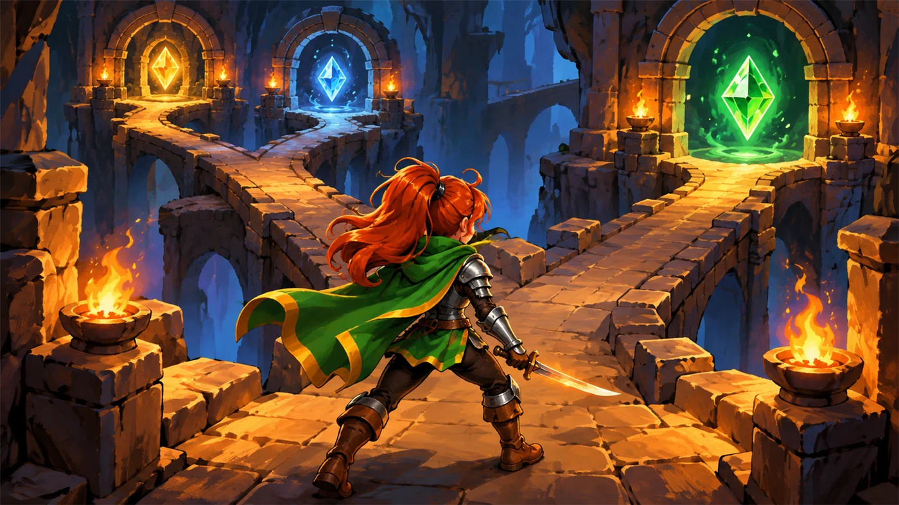
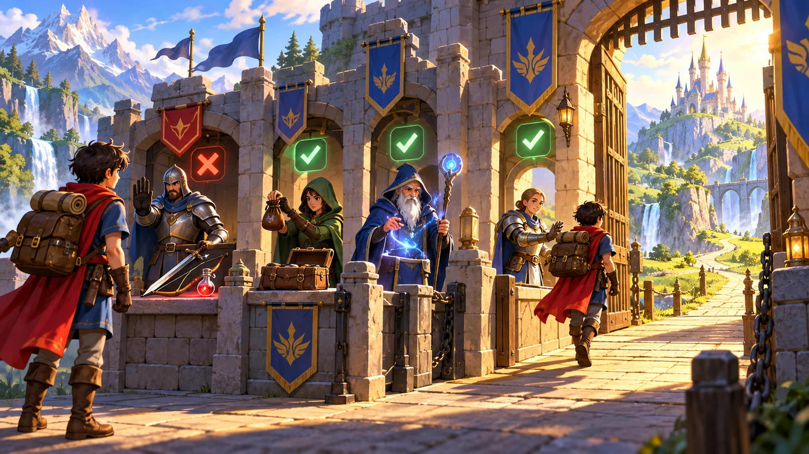
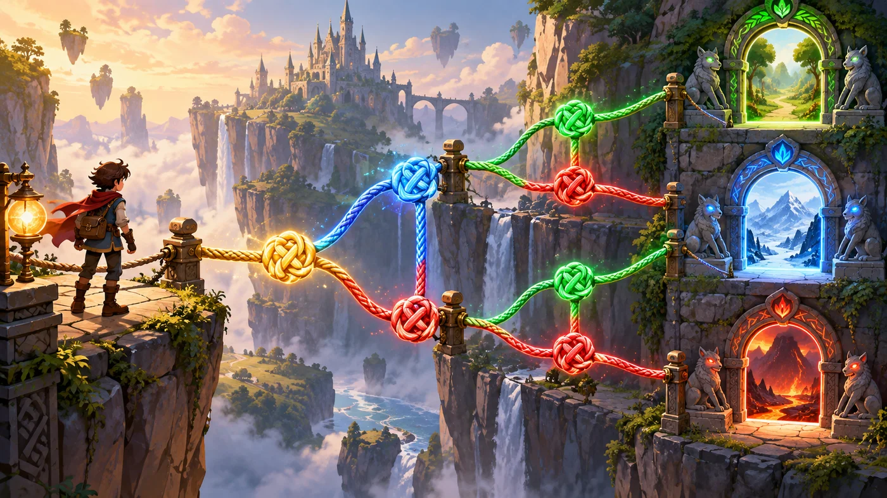
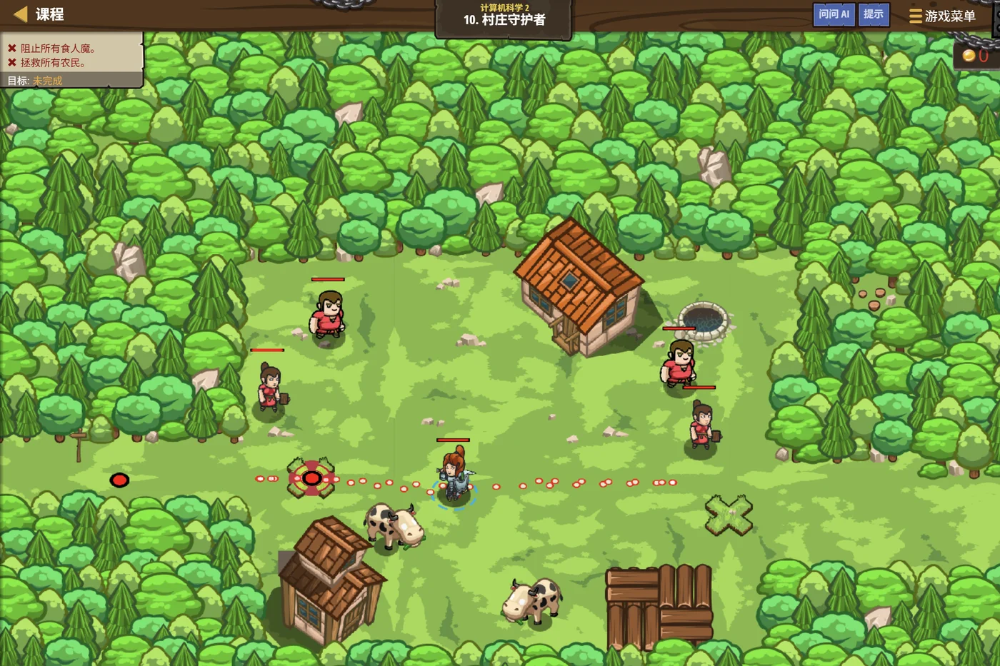

故事：溪谷边的村庄有两个入口，一左一右。
守护者要做的事很简单，半藏说，到左边看看有没有敌人，有就打；再到右边看看，有就打。
注意——两边的判断是分开的，不是二选一。
扣哒考级 · GESP C++ 二级 · 第 4 单元 | 回声溪谷 ECHOSTREAM VALLEY
双岔迷宫 多层分支结构
Nested Branching
服部半藏
影武者 · 你的向导
溪谷尽头是一座石砌迷宫。你刚走进去，就发现这里的岔口和一级那种完全不一样——
第一个岔口分成两条，可左边那条走不了几步，又分成两条；右边那条也分成两条。
服部半藏从上方的石梁上翻下来，落地无声：这里的路，不是选一次就完了。
你得选一次、再选一次、再选一次——每进一道门，门后还有门。
第一个岔口分成两条，可左边那条走不了几步，又分成两条；右边那条也分成两条。
服部半藏从上方的石梁上翻下来，落地无声：这里的路，不是选一次就完了。
你得选一次、再选一次、再选一次——每进一道门，门后还有门。
服部半藏 · 影武者
一级你学会了"二选一"。可现实里的事，往往要连着判断好几次：先判断是不是学生，如果是，再判断几年级；如果是一年级，再判断上不上晚托……
这一单元就讲：判断里面套判断——多层分支。

assets/illustrations/py-L2-04-01_nested_fork.webp
【配图位】石砌迷宫入口：第一个岔口立着一个发光菱形判断框，它的左出口走不了几步又被一个更小的菱形分开、右出口同样再分出一个小菱形；三个菱形由大到小层层嵌套、彼此发出的光不同色；一名新兵站在最外层菱形前抬头犹豫，服部半藏的影子贴在高处的石梁上。
0 单元导语与目标
Unit Overview
0.1 学习目标
1学完这个单元，你将能……
- 看懂两层、三层嵌套的分支结构
- 用正确的缩进写出层层嵌套的判断
- 说出
else if链为什么要在意顺序 - 用
&&、||、!把条件组合起来 - 说清"悬空 else"到底配对给谁
- 预判带嵌套分支的程序输出
2对标 GESP 考纲（C++ 二级）
- 掌握多层分支结构
- 掌握逻辑运算符的用法与优先级
- 掌握复合条件的书写与括号的使用
- 了解缩进与花括号对程序结构的影响
- 考核目标：能读出多层分支的执行路径，准确判断输出
0.2 考纲对照
| 本单元小节 | 对应考纲条目 | 真题常考形式 |
|---|---|---|
| 1 嵌套分支 | 多层分支结构 | 给一段两层 if，问某个输入走哪条路 |
| 2 else if 链 | 多分支的顺序 | 顺序写错会导致什么结果 |
| 3 逻辑运算 | 复合条件的书写 | 判断闰年这类复合条件题 |
| 4 花括号 | 语句归属 | 省略花括号后，哪一句归谁管 |
1 岔路里的岔路
Nested Branching
1.1 从一层到多层
图 2（SVG）：两层嵌套分支的执行路径
用代码写出上面那张图
C++
int n;
cin >> n;
if (n > 0) { // ← 第一层
if (n % 2 == 0) { // ← 第二层（缩进 4 格）
cout << "正偶数";
} else {
cout << "正奇数";
}
} else { // ← 第一层的另一边
if (n == 0) { // ← 这里也有第二层
cout << "零";
} else {
cout << "负数";
}
}输入 8 → 正偶数 输入 7 → 正奇数 输入 0 → 零 输入 -3 → 负数
打个比方：
嵌套分支就像"门中门"——先跨过第一道门，门后面还有一道门等着你。
关键在于：只有先满足外面的条件，里面的条件才有被问到的机会。
如果外面的条件不成立，里面写得再细也白搭——程序根本走不到那儿。
关键在于：只有先满足外面的条件，里面的条件才有被问到的机会。
如果外面的条件不成立，里面写得再细也白搭——程序根本走不到那儿。
1.2 嵌套怎么写才不乱
assets/illustrations/cpp-L2-04-04_brace_nest.webp
【配图位】石屋桌面上摆着一组由大到小、层层套合的带铰链木盒（像套娃）：最外层盒子贴着"if"标签、往里一层贴着"else"、最内侧还藏着一个小抽屉；每层盒盖的内侧都用同样的笔迹标着缩进刻度线；一名新兵正把最内层的小纸条塞进抽屉，服部半藏在一旁用尺子比着缩进位置。
| 写法 | 效果 | 推荐吗 |
|---|---|---|
每层都写花括号 { }，并缩进 | 层级一目了然，加代码也不易错 | 强烈推荐 |
| 省略花括号，靠缩进"意思一下" | 程序不认缩进，只看花括号和分号 | 不推荐 |
| 全部顶格写，不加缩进 | 虽然能编译，但人根本看不出层级 | 不推荐 |
特别注意：
C++ 里缩进只是给人看的，编译器完全不在乎。
程序真正认的是花括号
所以缩进写得再漂亮，如果花括号放错了地方，程序照样会走错路。
程序真正认的是花括号
{ } 和分号。所以缩进写得再漂亮，如果花括号放错了地方，程序照样会走错路。
2 if / else if / else 综合运用
The else if Chain
2.1 判断链的顺序

assets/illustrations/cpp-L2-04-03_guard_checkpoint.webp
【配图位】溪谷关隘的一排检查站：从近到远依次立着四道关卡，每道关卡的门楣上刻着一条越来越宽的检查条件（"最严苛""较严""一般""其余都放行"）；一名新兵拿着一块写着数字的木牌走到第二道关卡前，第二道关卡的门正好打开、其余三道的门都关着；服部半藏蹲在第三道关卡顶上观察。
成绩等级：从"最严"往"最宽"排
C++
int score;
cin >> score;
if (score >= 90) { // 最严的条件放最前面
cout << "A";
} else if (score >= 80) { // 前面不成立，才轮到它
cout << "B";
} else if (score >= 60) {
cout << "C";
} else { // 其余全部都归 else
cout << "D";
}
95 → A 85 → B 70 → C 50 → D
关键 一旦有一个条件成立，就跳出整条链，后面的不再判断
关键 一旦有一个条件成立，就跳出整条链，后面的不再判断
两条经验：
① 条件要"互斥"——别让两个条件同时成立，否则只有写在前面的那个起作用。
② 按"由严到宽"排——把最难满足的条件放最前面，最后用
反过来写（从宽到严）会怎样？第一个条件就把所有人都拦下了，后面的分支永远轮不到——那就等于白写。
② 按"由严到宽"排——把最难满足的条件放最前面，最后用
else 兜住全部剩余情况。反过来写（从宽到严）会怎样？第一个条件就把所有人都拦下了，后面的分支永远轮不到——那就等于白写。
2.2 常见判断场景
| 场景 | 条件怎么写 | 要注意 |
|---|---|---|
| 判断奇偶 | n % 2 == 0 | 用 ==，不是 = |
| 判断正负零 | n > 0 / n == 0 / n < 0 | 三种情况要写全 |
| 判断区间 | n >= 60 && n <= 100 | 必须用 && 连起来，不能写成 60 <= n <= 100 |
| 判断闰年 | (N % 4 == 0 && N % 100 != 0) || (N % 400 == 0) | 括号不能少，先算括号里的 |
| 判断倍数 | n % 3 == 0 | % 只能用于整数 |
一个特别容易错的写法：
它会被理解成
正确写法：
if (60 <= n <= 100) 是错的！它会被理解成
(60 <= n) <= 100——先算出 60 <= n 得 0 或 1，
再拿这个 0 或 1 去和 100 比较，结果永远成立，条件就失去意义了。正确写法：
if (n >= 60 && n <= 100)。
3 用逻辑运算组合条件
Combining Conditions
3.1 与、或、非

assets/illustrations/cpp-L2-04-02_condition_knots.webp
【配图位】溪谷岸边的一排木桩上系着三种绳结，每根绳子上挂着一块写着条件的木牌：第一种是两根绳子被一个结死死系在一起（与，两块牌都亮才算通）；第二种是两根绳子并排通向同一个环（或，任意一根亮即可）；第三种是一根绳子绕过一个翻转的路标（非，牌子上的字被翻到背面）；一名新兵正逐个数着绳结，服部半藏盘腿坐在木桩上。
图 6（SVG）：与、或、非的真值表
| 运算符 | 读作 | 什么时候成立 | 例子 |
|---|---|---|---|
&& | 与（并且） | 两边都成立才成立 | n >= 60 && n <= 100 |
|| | 或（或者） | 只要一边成立就成立 | n < 0 || n > 100 |
! | 非（取反） | 原来是真就变假，反之亦然 | !(n == 0) 等价于 n != 0 |
3.2 优先级与括号
加不加括号，结果可能不一样
C++
int n = 200;
// 不加括号：先算 n % 4 == 0，再和后面的 && 一起算
cout << (n % 4 == 0 && n % 100 != 0 || n % 400 == 0) << endl; // 0
// 加括号：按"能被4整除且不能被100整除，或者能被400整除"来判断
cout << ((n % 4 == 0 && n % 100 != 0) || (n % 400 == 0)) << endl; // 1OUTPUT 0
1
为什么不一样？因为
1
为什么不一样？因为
&& 的优先级高于 ||，不加括号时会被理解成
(A && B) || C——这里恰好凑巧一样；但只要条件复杂一点，就必须靠括号说清楚。
优先级（一级也学过，这里再排一遍）：
括号 ( ) → 一元（!、++、--、正负号）→ 乘除取余 → 加减 → 关系（< > == 等）→ 逻辑与 && → 逻辑或 || → 赋值 =
两条保命规则：① 同级从左往右；② 拿不准就加括号——括号里的永远最先算。
括号 ( ) → 一元（!、++、--、正负号）→ 乘除取余 → 加减 → 关系（< > == 等）→ 逻辑与 && → 逻辑或 || → 赋值 =
两条保命规则：① 同级从左往右；② 拿不准就加括号——括号里的永远最先算。
4 花括号与层级
Braces & Levels
4.1 花括号为什么不能省
省了花括号，第二句就不归 if 管了
C++
int n = 5;
// 危险写法：看起来两句都在 if 里，其实只有第一句
if (n > 0)
cout << "这是正数" << endl;
cout << "并且大于零" << endl; // ← 它其实在 if 外面！
// 安全写法：用花括号把两句一起包住
if (n > 0) {
cout << "这是正数" << endl;
cout << "并且大于零" << endl;
}口诀
if 只管紧随其后的第一条语句；想管多句，就用花括号把它们装进同一个书包4.2 悬空 else 的陷阱
图 7（SVG）：悬空 else 到底配给谁
最容易看错的一条规则：
也就是说，它不一定配给缩进看起来"和它对齐"的那个 if。
解决办法只有一个：给每层的 if 都加上花括号——这样 else 的归属就一目了然，不用去猜。
else 永远配给"离它最近、而且还没配对过的 if"。也就是说，它不一定配给缩进看起来"和它对齐"的那个 if。
解决办法只有一个：给每层的 if 都加上花括号——这样 else 的归属就一目了然，不用去猜。
5 代码实战
Level Practice
关卡
村庄守护者
进入关卡 →思路：在循环里轮流走到两个入口，每个入口都先判断有没有敌人，再决定要不要打。

assets/stages/py-L2-04-stage1_village_guardian.webp
【游戏截图位】关卡村庄守护者通关画面：村庄左右两个入口都已清空，英雄刚结束一次巡逻站在右侧入口；地面上留有往返巡逻的脚印轨迹；屏幕下方代码区显示 while 循环与两层 if 判断语句，右上角显示"关卡完成"提示。
重点示例：两个入口，两套判断
C++
#include <iostream>
using namespace std;
int main() {
while (true) {
// 走到左侧入口
hero.moveXY(35, 34);
auto leftEnemy = hero.findNearestEnemy();
if (leftEnemy) { // 有敌人吗？
hero.attack(leftEnemy);
}
// 走到右侧入口，再判断一次
hero.moveXY(60, 31);
auto rightEnemy = hero.findNearestEnemy();
if (rightEnemy) {
hero.attack(rightEnemy);
}
}
return 0;
}要点 两次
if 互相独立；写成 if-else 就会变成"二选一"，右边那个入口就顾不上判断了
和本单元的关联：
这段代码里有两层结构：
外面是"一直重复"（循环），里面是"先判断再动手"（分支）。
当判断里还要再判断、或者判断被包在循环里时，就是"多层结构"——这正是二级和一级的分水岭。
去扣哒世界闯这一关 →
外面是"一直重复"（循环），里面是"先判断再动手"（分支）。
当判断里还要再判断、或者判断被包在循环里时，就是"多层结构"——这正是二级和一级的分水岭。
6 常见陷阱
Common Pitfalls

扣哒鸭 · 调试官
多层分支是二级最容易"看着对、其实错"的地方。四条，务必读两遍。
1
把区间判断写成
60 <= n <= 100。
扣哒鸭：C++ 不认这种"连着写"的比较！
它会先算
正确写法：
它会先算
60 <= n 得到 0 或 1，再拿这个结果去和 100 比——永远成立。正确写法：
n >= 60 && n <= 100。正确写法：
n >= 60 && n <= 1002
认为缩进能决定"谁归谁管"。

扣哒鸭：C++ 不看缩进，只看花括号和分号。
缩进写得再漂亮，花括号放错了，程序照样走错路。
所以养成好习惯：每层都写花括号。
缩进写得再漂亮，花括号放错了，程序照样走错路。
所以养成好习惯：每层都写花括号。
正确做法：缩进照写，花括号也不能省
3
以为
else 配给"缩进对齐"的那个 if。
扣哒鸭：else 配给离它最近、还没配对过的那个 if。
它可能和你想的不是同一个！
加花括号是唯一的保险。
它可能和你想的不是同一个！
加花括号是唯一的保险。
正确做法：每层 if 都加花括号，杜绝悬空 else
4
该用两个独立 if 的地方写成了 if-else。

扣哒鸭：
如果两件事本来就是各自独立的（比如左边有敌人的话要打、右边有敌人的话也要打）， 那就该写两个单独的 if。
if-else 是"二选一"——一个成立，另一个就不看了。如果两件事本来就是各自独立的（比如左边有敌人的话要打、右边有敌人的话也要打）， 那就该写两个单独的 if。
判断口诀：互斥用 if-else，独立用两个 if
7 题目练习
Practice
第 1 题改编自 C++ 二级真题，其余为原创练习题。
改编自 2026 年 9 月 · C++ 二级 · 第 5 题单选题
判断年份 N 是否为闰年的规则是：能被 4 整除但不能被 100 整除，或者能被 400 整除。
以下 C++ 表达式中，能正确判断 N 是否为闰年的是（ ）。
A.
B.
C.
D.
(N % 4 == 0 && N % 100 != 0) || (N % 400 == 0)B.
N % 4 == 0 && N % 100 == 0 || N % 400 == 0C.
(N / 4 == 0 && N / 100 != 0) || (N / 400 == 0)D.
(N % 4 == 0 && N % 100 != 0) && (N % 400 == 0)
查看答案与详解
答案：A。逐项对比题目给的两条规则：
规则一：能被 4 整除 且 不能被 100 整除 →
规则二：能被 400 整除 →
两条之间是"或者"，用
B 错：把"不能被 100 整除"写成了"能被 100 整除"（
C 错：用的是整除
D 错：两条规则之间用了
这一题把
对应小节2.2 常见判断场景；3.2 优先级与括号。
规则一：能被 4 整除 且 不能被 100 整除 →
N % 4 == 0 && N % 100 != 0；规则二：能被 400 整除 →
N % 400 == 0；两条之间是"或者"，用
|| 连接，并加上括号。A 项完全符合。B 错：把"不能被 100 整除"写成了"能被 100 整除"（
!= 写成了 ==），含义反了；C 错：用的是整除
/ 而不是取余 %，判断"能否整除"必须用 %；D 错：两条规则之间用了
&&，变成"两个条件必须同时满足"，那 2000 年就不算闰年了。这一题把
%、!=、&&、|| 和括号全考了一遍。对应小节2.2 常见判断场景；3.2 优先级与括号。
原创练习题单选题
下列 C++ 代码执行后，输出的结果是（ ）。
int a = 5, b = -3;
if (a > 0)
if (b > 0)
cout << "甲乙都正";
else
cout << "甲不正";
A.甲乙都正
B.甲不正
C.什么都不输出
D.编译错误
B.甲不正
C.什么都不输出
D.编译错误
查看答案与详解
答案：B（甲不正）。这是典型的"悬空 else"！
没有花括号时，
也就是
所以程序的真实结构是：
走一遍：a = 5 > 0 成立，进入外层；b = -3，
为什么很多人会答 C？因为他们以为 else 配给外层的
那样的话 a = 5 > 0 成立，else 不执行，就"什么都不输出"了——这正是陷阱所在。
避免的办法：给每层的 if 都加上花括号。
对应小节4.2 悬空 else 的陷阱。
没有花括号时，
else 会配对给离它最近、还没配对过的 if——也就是
if (b > 0)，而不是看起来缩进对齐的 if (a > 0)。所以程序的真实结构是：
if (a > 0) { if (b > 0) 输出"甲乙都正"; else 输出"甲不正"; }走一遍：a = 5 > 0 成立，进入外层；b = -3，
b > 0 不成立，
于是执行内层那个 else，输出 甲不正。为什么很多人会答 C？因为他们以为 else 配给外层的
if (a > 0)。那样的话 a = 5 > 0 成立，else 不执行，就"什么都不输出"了——这正是陷阱所在。
避免的办法：给每层的 if 都加上花括号。
对应小节4.2 悬空 else 的陷阱。
原创练习题判断题
在 C++ 中，
if (60 <= n <= 100) 能正确判断 n 是否在 60 到 100 之间。（ ）查看答案与详解
答案：错误（×）。C++ 不支持这种"连着写"的比较方式。
它会先算
正确写法：
对应小节2.2 常见判断场景。
它会先算
60 <= n，得到 0 或 1；再拿这个 0 或 1 去和 100 比较，
因为 0 和 1 都小于等于 100，所以结果永远为真，判断失去意义。正确写法：
if (n >= 60 && n <= 100)。对应小节2.2 常见判断场景。
原创练习题单选题
下列 C++ 代码执行后，输出的结果是（ ）。
int score = 85;
if (score >= 60)
cout << "C";
else if (score >= 80)
cout << "B";
else if (score >= 90)
cout << "A";
else
cout << "D";
A.A B.B C.C D.D
查看答案与详解
答案：C。因为条件顺序写反了！
程序从上往下判断，
这说明：
正确顺序应是
对应小节2.1 判断链的顺序。
程序从上往下判断，
85 >= 60 第一个就成立，
于是立刻输出"C"并跳出整条链，后面的 B、A 永远轮不到。这说明：
else if 链必须"由严到宽"排——最严格的条件放最前面。正确顺序应是
>= 90 → >= 80 → >= 60 → else。对应小节2.1 判断链的顺序。
原创练习题单选题
已知
int n = 15;，下列表达式中值为 0 的是（ ）。
A.
B.
C.
D.
n % 3 == 0B.
n % 5 == 0C.
n % 2 != 0D.
!(n % 5 == 0)
查看答案与详解
答案：D。
A：15 % 3 = 0，0 == 0 成立 → 1；
B：15 % 5 = 0，0 == 0 成立 → 1；
C：15 % 2 = 1，1 != 0 成立 → 1；
D：括号里
本题同时考了三件事：取余、关系运算的结果是 1 或 0、以及逻辑非的取反作用。
对应小节3.1 与、或、非。
A：15 % 3 = 0，0 == 0 成立 → 1；
B：15 % 5 = 0，0 == 0 成立 → 1；
C：15 % 2 = 1，1 != 0 成立 → 1；
D：括号里
15 % 5 == 0 成立，值为 1；!1 = 0。本题同时考了三件事：取余、关系运算的结果是 1 或 0、以及逻辑非的取反作用。
对应小节3.1 与、或、非。
原创练习题编程题
题目要求：读入一个整数，按下面规则输出——
如果它同时是 3 和 5 的倍数，输出
样例：输入
FizzBuzz；
如果只是 3 的倍数，输出 Fizz；
如果只是 5 的倍数，输出 Buzz；
否则输出它本身。样例：输入
15，输出 FizzBuzz。查看参考答案与要点
#include <iostream>
using namespace std;
int main() {
int n;
cin >> n;
if (n % 3 == 0 && n % 5 == 0) { // ★ 最严的条件放最前面
cout << "FizzBuzz";
} else if (n % 3 == 0) {
cout << "Fizz";
} else if (n % 5 == 0) {
cout << "Buzz";
} else {
cout << n;
}
return 0;
}
输入 15 输出 FizzBuzz；输入 9 输出 Fizz；输入 10 输出 Buzz；输入 7 输出 7。
要点：
① "同时是 3 和 5 的倍数"这个条件最严，必须放在最前面——
如果先判断 n % 3 == 0，15 就会直接输出 Fizz，永远轮不到 FizzBuzz；
② 复合条件要用 && 连接，两个条件都得成立；
③ 最后的 else 兜住所有剩余情况，不用再写条件；
④ 这个题目非常经典，考的就是"判断链的顺序"。
对应小节2.1 判断链的顺序。
8 本单元小结
Unit Summary
服部半藏 · 影武者
四句话记住多层分支：一、嵌套分支 = 门中门；只有外层走通了，内层才有机会被问到。
二、else if 链从上往下判断，一成立就跳出——条件要由严到宽排。
三、区间判断必须用 && 连起来，不能写成 60 <= n <= 100。
四、else 配给最近的未配对 if——所以每层都要加花括号。
迷宫的每一道门都被你打开了。下一单元，我们往更深处走——旋转阶梯。
你在迷宫里学会了什么
- 嵌套分支——判断里面再判断；外层不成立，内层根本不会被执行。
- 缩进——只是给人看的，C++ 真正认的是花括号和分号。
- else if 链——从上往下判断，一成立就跳出整条链。
- 判断链顺序——由严到宽排；反过来写，后面的分支永远轮不到。
- 区间判断——
n >= 60 && n <= 100，不能写成60 <= n <= 100。 - 逻辑与
&&——两边都真才为真（像两把锁）。 - 逻辑或
||——一边真就为真（像两扇门）。 - 逻辑非
!——取反；只作用在右边那一个条件上。 - 优先级——
&&高于||；拿不准就加括号。 - 花括号——
if只管第一条语句；多句必须用{ }包住。 - 悬空 else——配给最近且未配对的
if；加花括号是唯一的保险。 - 互斥 vs 独立——二选一用
if-else，两件事各管各的用两个if。